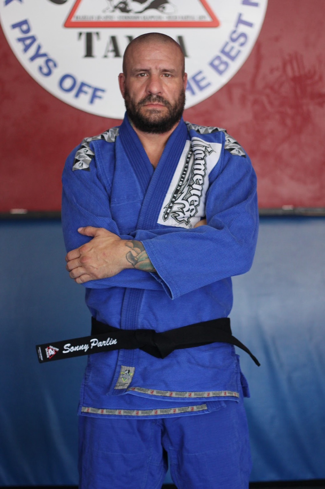

The story
It never got easier. I got better at being uncomfortable.
I walked onto the mat for the first time on September 4, 2007, in West Hartford, Connecticut. I was 34, which felt late, and fairly sure I had missed the window for something like this. I had no idea that a single class would turn into the thing that organizes the rest of my life.
Royce Gracie handed me my blue belt in 2009. Purple came in 2010, and then I moved to Florida, found a new room, and kept climbing one hard-won belt at a time: brown in 2015, black on September 3, 2017, and first degree in 2023. On July 30, 2026, Professor Robby Donofrio of Gracie Brandon, who I train under today, promoted me to second degree.
Along the way I competed at every belt from white to black, opened Gracie Bradenton in 2015 while I was still a brown belt, and spent more nights than I can count wondering whether the mats would pay for themselves. They did, eventually, mostly because the people on them kept showing up.
Nineteen years in, the thing I understand best is that jiu jitsu does not get easier. You get better at being uncomfortable. That is the whole lesson, and it is the one I try to pass on to every student who walks through our door.
